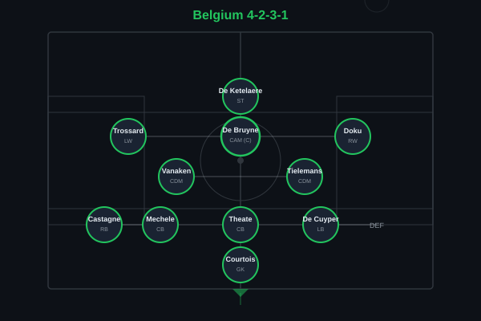
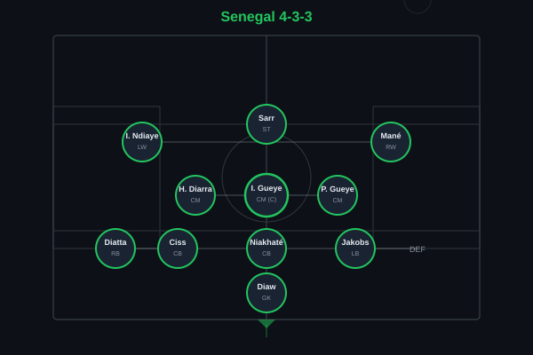
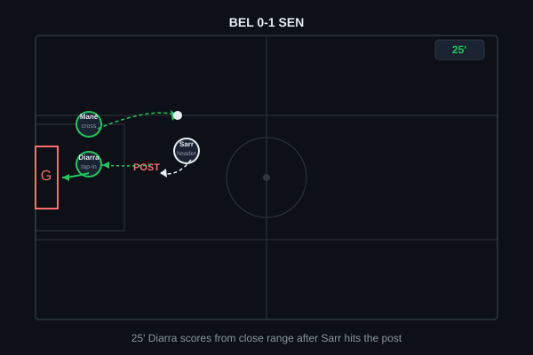
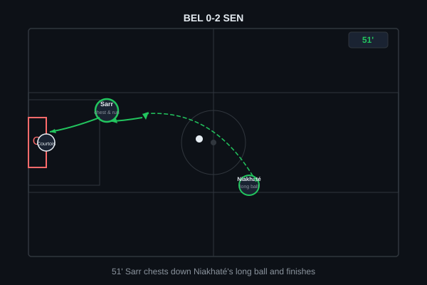
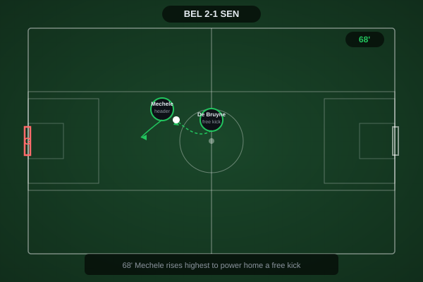
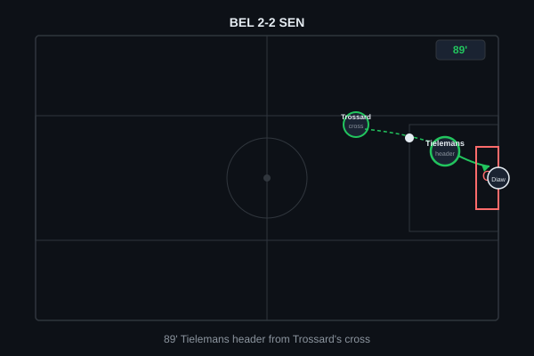
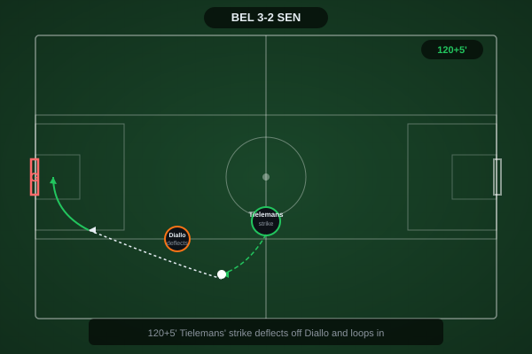
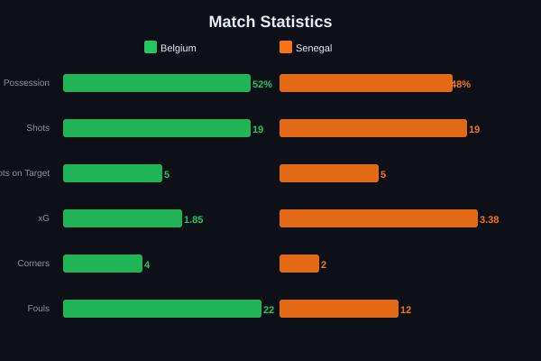
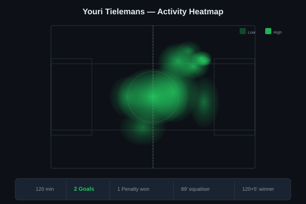

Belgium were dead and buried at 0-2 down with four minutes of regulation time remaining, having been thoroughly outplayed by a sensational Senegalese counter-attacking performance. Romelu Lukaku gave them a lifeline with an 86th-minute header, Youri Tielemans equalised in the 89th to force extra time, and the same midfielder stepped up to convert a 120+5' penalty after an extraordinary Doku run to complete a turnaround for the ages - the biggest comeback of the 2026 World Cup.


Belgium (4-2-3-1): Courtois; Castagne, Mechele, Theate, De Cuyper; Vanaken, Tielemans; Trossard, De Bruyne (c), Doku; De Ketelaere. Senegal (4-3-3): Diaw; Diatta, Ciss, Niakhaté, Jakobs; H. Diarra, I. Gueye (c), P. Gueye; I. Ndiaye, Sarr, Mané.
For 80 minutes, Senegal executed a near-perfect knockout gameplan. They ceded possession to Belgium - a team that thrives on controlled build-up through De Bruyne - while sitting in a compact mid-block, then striking with devastating speed on the transition. Mané and Sarr operated as twin outlet threats, each capable of turning defense into attack within two passes. Belgium's first-half territory generated nothing meaningful: 68% possession but only three shots, none on target, as De Ketelaere was isolated and De Bruyne increasingly frustrated by Gueye's disciplined screening.
The decisive tactical shift came at 0-2 down when Tedesco essentially abandoned the double pivot, pushing Tielemans into an advanced role and switching to a back-three with Meunier introduced. The move fundamentally changed Belgium's attacking geometry: suddenly there was a runner arriving late into the box (Tielemans's header for 2-2 came from exactly that movement), and Lukaku's presence as a target gave Doku and Trossard licence to cross early rather than over-elaborate. Senegal, having been so disciplined for 85 minutes, couldn't reorganise quickly enough - the psychological shock of Lukaku's goal visibly shifted the momentum, and Tielemans's second arrived before Senegal could catch their breath.
The key tactical moment was Tedesco's willingness to sacrifice structural security at 0-2 down - a gamble that could have left Belgium exposed to a killer third on the counter, but instead unlocked the attacking patterns that Senegal's low block had successfully contained all match. Pure risk-reward, and it paid off spectacularly.

Senegal's opener came from their most dangerous attacking pattern - Mané isolated against De Cuyper on the left flank. The Senegalese captain drove to the byline before picking out Sarr at the far post with a driven cross. Sarr's header crashed against the post with Courtois beaten, but Diarra reacted quickest to the rebound, stabbing home from close range for his first World Cup goal. A classic set of circumstances: Belgium had dominated territory but conceded from the first moment Senegal genuinely threatened.

If the first goal was about Senegal's wide threat, the second was a masterclass in route-one counter-attacking football. Niakhaté launched a long ball from deep, bypassing Belgium's entire midfield structure. Sarr read it quicker than Mechele, used his chest to control in full stride, then drove into the box and finished low across Courtois into the far corner. The kind of goal that makes a defensive midfielder's job look straightforward in the build-up but requires elite forward instincts to execute. Senegal 2-0 up, Belgium staring at elimination.

With four minutes remaining, Belgium needed a miracle. It arrived via the most traditional route - Thomas Meunier, introduced as a substitute, delivered a cross from the right that found Lukaku at the near post. The big striker's header was emphatic, powering past Diaw to halve the deficit and give Lumen Field a reason to believe. Suddenly the Belgian bench erupted, the crowd found its voice, and Senegal - for the first time all match - looked uncertain.

Three minutes after Lukaku's lifeline, Tielemans delivered the equaliser. Leandro Trossard, drifting in from the left, spotted Tielemans's late run into the box and picked him out with a perfectly weighted delivery. The midfielder, who had been pushed further forward after the tactical reshuffle, directed his header back across goal and into the corner. From 2-0 down at 86' to 2-2 by 89' - a three-minute sequence that will define this World Cup's drama. Extra time awaited.

The fairytale ending. Deep into the second period of extra time, with penalties looming, Jeremy Doku picked up the ball on the left and drove into the box with that unmistakable low-centre-of-gravity dribble. Ciss stuck out a leg, Doku went to ground, and the referee pointed to the spot. Tielemans - the man who had already scored once, the man who had been anonymous for 80 minutes before being unleashed - stepped up with the weight of a nation on his shoulders and sent Diaw the wrong way. Complete redemption. Historic. Unforgettable.

52/48 possession split tells a different story to territory - Senegal were ruthlessly efficient with their chances while Belgium dominated the ball without incision until the final frantic minutes. Belgium had 1.85 xG vs Senegal's 3.38 xG, reflecting the quality of Senegalese chances. 22 fouls by Belgium highlights their growing desperation as the match wore on.

The story of Youri Tielemans's night mirrors Belgium's match perfectly: anonymous in a deep midfield role for the first 80 minutes, then transformed into a match-winning hero once Tedesco released him higher up the pitch. His 89th-minute header was a product of intelligent late-box movement that Senegal's tiring midfield simply couldn't track, and his penalty under the most extreme pressure imaginable - 120+5', World Cup knockout stage, having dragged his team back from the dead - showed ice-cold nerve. Two goals, one historic comeback, the defining performance of his international career.
Illustrative reconstruction based on known event locations, not raw GPS tracking data.
Got right: The pre-match expectation that Belgium would control possession and territory was broadly accurate - they did, for long stretches of normal time. Lukaku was correctly identified as Belgium's most likely goal threat, and the warning about Senegal's transition speed was at least half-right in that Mané and Sarr were the danger men.
Got wrong: Comprehensively wrong on the shape of the match. Predicted a comfortable 2-0 Belgian win, not the wildest knockout comeback of the tournament. Underestimated Senegal's ability to create quality chances from minimal possession, and completely missed the Tielemans-on-the-rise narrative - he was flagged as a midfield controller rather than a match-winning goal threat. The pre-match piece identified De Bruyne as the likely difference-maker; instead it was Tielemans, from open play and the spot, in the most dramatic possible circumstances.
Tielemans - 9.5 â MOTM (2 goals, historic comeback)
Lukaku - 7.5 (crucial header sparked revival)
Doku - 7.0 (won the penalty, constant threat)
Meunier - 6.5 (assist, tactical impact off bench)
Sarr - 8.0 (goal, constant outlet threat)
Mané - 7.5 (assist, led every counter)
Niakhaté - 7.0 (assist, composed at the back)
Diarra - 7.0 (goal, energetic midfield display)
Belgium advance to face Uruguay/Norway in the Round of 16. Senegal exit valiantly.
💬 Reactions & Comments